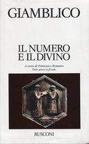
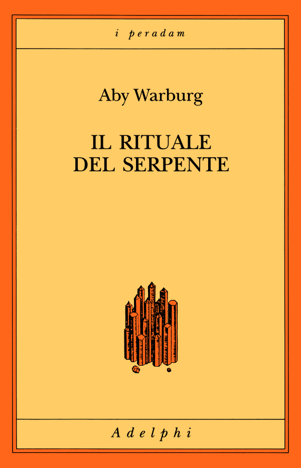
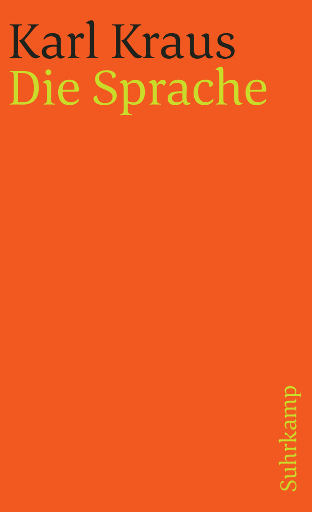
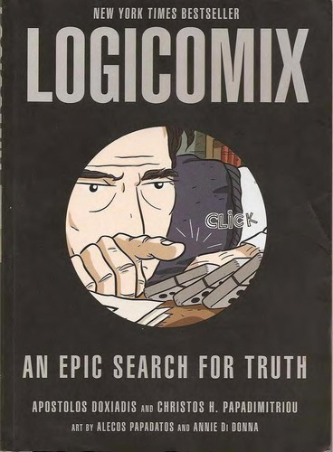
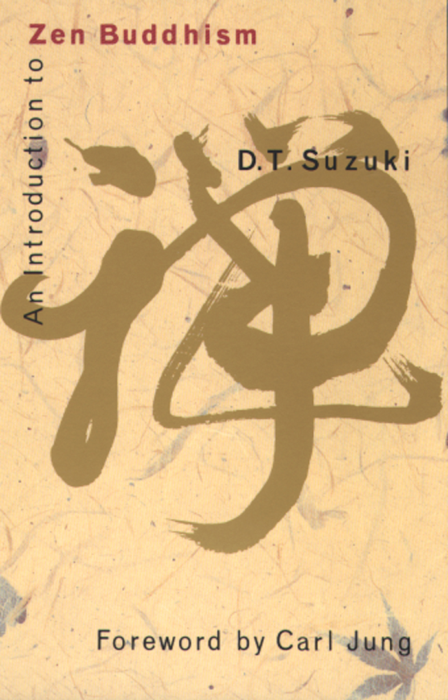
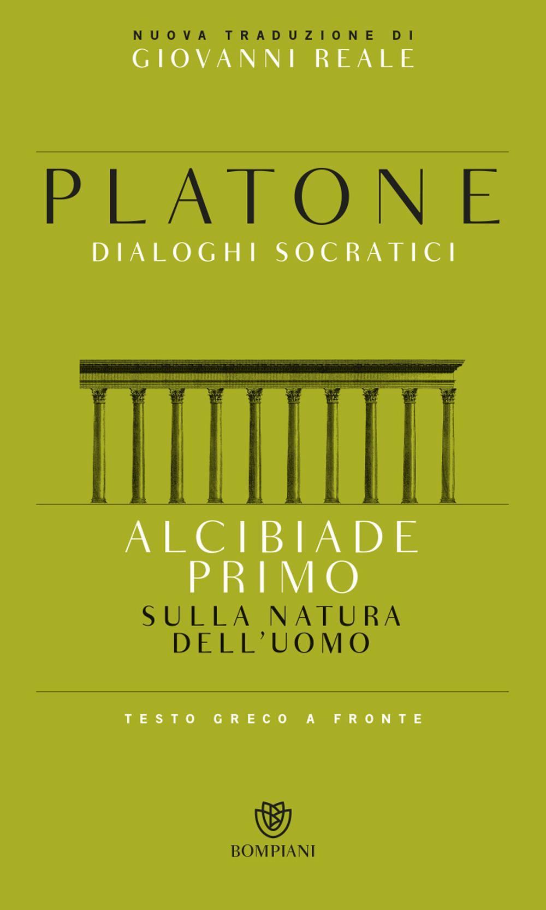
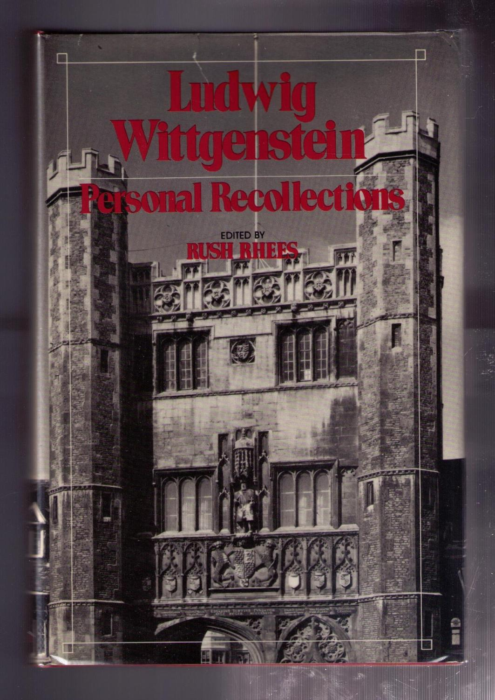

45:22 · 16 OPERE
Wittgenstein e la patologia del linguaggio.
Il filo del discorso
Il relatore mette in discussione una filosofia che, a suo giudizio, restringe il pensiero alla correttezza delle parole. Parte da Socrate nel Fedro e attraversa il rapporto greco fra matematica, natura e ricerca; poi concentra la critica sul Tractatus e sulla metafora della cura nelle Ricerche filosofiche. Gli esempi scolastici servono a distinguere il cercare da un esercizio con soluzione già predisposta.
Leggi la sintesi completaRiduci la sintesi
La Vienna di Wittgenstein, Kraus e Freud, la storia di Warburg e il confronto con Heidegger offrono uno sfondo culturale, mentre Russell e un probabile rimando a Logicomix introducono la fondazione della matematica. Nella parte finale una lettura da Suzuki, l’Alcibiade primo e i ricordi di Pascal e Drury riportano il discorso alla persona che usa il linguaggio. La conclusione difende la possibilità di pensare anche quando la risposta non è già disponibile. La scheda distingue questa lettura polemica dalle formulazioni effettive di Wittgenstein e segnala i racconti biografici e le attribuzioni che richiedono ulteriori riscontri.
I libri nel discorso

Fedro
Note sul riferimento
Copertina: BUR · 2006 · a cura di Roberto Velardi
Immagine autentica dell’opera, controllata visivamente; l’edizione di riferimento non è attribuita al filmato.
Socrate nel Fedro e il valore del dialogo con gli uomini: riferimento riconoscibile al passo 230d.

La teologia dell’aritmetica (Theologumena arithmeticae)
Note sul riferimento
Copertina del volume che comprende La teologia dell’aritmetica: Rusconi · Il numero e il divino · 1995 · a cura di Francesco Romano
Fotografia autentica della raccolta Rusconi, con tre testi greco-italiani a cura di Francesco Romano. La voce riguarda il testo anonimo tradizionalmente attribuito a Giamblico, non l’intero volume e non una paternità certa. Edizione non identificata nel filmato.
Giamblico e Teologia dell’aritmetica espliciti; si conserva la attribuzione bibliografica a Pseudo-Giamblico.

Tractatus logico-philosophicus
Note sul riferimento
Copertina del volume che comprende il Tractatus: Einaudi · Tractatus logico-philosophicus e Quaderni 1914–1916 · 2009
Copertina del volume Einaudi che comprende sia il Tractatus sia i Quaderni 1914–1916. La voce identifica il Tractatus; l’ISBN appartiene al volume contenitore e l’edizione non è accertata nel filmato.
Tractatus e proposizione 7 espliciti; ritorni a 1.1, 1.13, 5.6 e alla scala finale.

Il rituale del serpente. Una relazione di viaggio
Identificazione probabile
Note sul riferimento
Copertina: Adelphi, i peradam 5, 1998, 112 pagine; traduzione di Gianni Carchia e Flavio Cuniberto, postfazione di Ulrich Raulff, ISBN 9788845913853. Copertina della edizione di riferimento; non è la nuova edizione 2025 né prova della copia nel filmato.
Immagine autentica dell’opera, controllata visivamente; l’edizione di riferimento non è attribuita al filmato.
Warburg e libro sul simbolismo del serpente: probabile Il rituale del serpente, titolo non pronunciato.

Heidegger e il nazismo
Note sul riferimento
Copertina: Bollati Boringhieri · Nuova cultura 5 · 1988
Immagine autentica dell’opera, controllata visivamente; l’edizione di riferimento non è attribuita al filmato.
Heidegger e il nazismo di Farías esplicito.

Quaderni neri (Schwarze Hefte)
Note sul riferimento
Copertina di un volume del corpus: GA 94: Immagine di riferimento: Gesamtausgabe 94, Überlegungen II–VI (Schwarze Hefte 1931–1938), a cura di Peter Trawny, Klostermann 2014, VI e 536 pagine, ISBN 9783465038153. La voce riguarda il corpus, la cui pubblicazione è iniziata nel 2014; non tutti i quaderni sono contenuti in GA 94.
Copertina autentica Klostermann vista integralmente: fondo grigio, Martin Heidegger, Gesamtausgabe in blu, Band 94 e titolo Überlegungen II–VI, Schwarze Hefte 1931–1938. Rappresenta soltanto il primo volume pubblicato del corpus; non si attribuisce al relatore la citazione specifica di GA 94.
Quaderni neri espliciti senza identificazione del volume.

Ricerche filosofiche
Identificazione probabile
Note sul riferimento
Copertina: Einaudi · Piccola Biblioteca 438 · 2009 · a cura di Mario Trinchero
Immagine autentica dell’opera, controllata visivamente; l’edizione di riferimento non è attribuita al filmato.
Richiamo al paragone della domanda filosofica con una malattia, riscontrato nella parte I, §255; probabile riferimento al libro, senza una edizione determinata.

Die Sprache
Note sul riferimento
Copertina: Suhrkamp, Schriften, prima sezione, volume 7, a cura di Christian Wagenknecht, 475 pagine, ISBN 9783518378175; prima uscita Suhrkamp 1987, edizione corrente indicata dal catalogo 2019. Raccolta postuma originariamente pubblicata nel 1937 da Philipp Berger. Immagine del singolo volume, non del cofanetto.
Immagine autentica dell’opera, controllata visivamente; l’edizione di riferimento non è attribuita al filmato.
Karl Kraus e titolo tedesco Die Sprache espliciti.

Essere e tempo
Note sul riferimento
Copertina: Longanesi · 2005 · traduzione di Pietro Chiodi, a cura di Franco Volpi
Immagine autentica dell’opera, controllata visivamente; l’edizione di riferimento non è attribuita al filmato.
Essere e tempo esplicito; la data bibliografica corretta è 1927.

Principia Mathematica
Note sul riferimento
Copertina del volume I: Cambridge University Press · copertina del volume I
Immagine autentica del volume I, titolo e autori leggibili. La voce bibliografica comprende l’opera in tre volumi, ma la fotografia non mostra un cofanetto completo. Non si assegna alla singol’immagine l’ISBN dell’insieme o una ristampa non accertata.
Principia Mathematica e Russell espliciti; il repertorio conserva il coautore Whitehead.

Logicomix. An Epic Search for Truth
Identificazione probabile
Note sul riferimento
Copertina: Bloomsbury USA, brossura, 5 ottobre 2009, 352 pagine, ISBN 9781596914520. Copertina inglese del volume; edizione greca Ikaros 2008 distinta. Titolo non pronunciato nel filmato.
Immagine autentica dell’opera, controllata visivamente; l’edizione di riferimento non è attribuita al filmato.
Romanzo a fumetti su Russell e i logici, con una scena su Gödel: probabile Logicomix, titolo non pronunciato.

An Introduction to Zen Buddhism (Introduzione al buddhismo Zen)
Note sul riferimento
Copertina: Grove Paperback, 1 giugno 1971, 102 pagine secondo il catalogo editoriale, ISBN 9780802130556. Copertina inglese autentica con titolo, Suzuki e prefazione di Jung; non è attribuita al video questa tiratura.
Immagine autentica dell’opera, controllata visivamente; l’edizione di riferimento non è attribuita al filmato.
Suzuki e Introduzione al buddhismo Zen espliciti; lettura di un dialogo su mente e parole.

Cratilo
Note sul riferimento
Copertina: Carocci · 2022
Copertina autentica controllata visivamente. Edizione di riferimento; non identifica l’esemplare usato o citato nel video.
Cratilo di Platone esplicito nel confronto fra dialogo e filosofia della lingua.

Alcibiade primo. Sulla natura dell’uomo
Note sul riferimento
Copertina: Bompiani, 2015, 363 pagine, testo greco a fronte, introduzione e traduzione di Giovanni Reale, bibliografia di Vincenzo Cicero, ISBN 9788845280566. Copertina del singolo dialogo, come attestato dal catalogo.
Immagine autentica dell’opera, controllata visivamente; l’edizione di riferimento non è attribuita al filmato.
Alcibiade maggiore esplicito e distinzione fra chi parla e parole usate: riscontro in Alcibiade primo 129c–e.

Ludwig Wittgenstein: Personal Recollections
Note sul riferimento
Copertina: Basil Blackwell, Oxford, 1981, x e 235 pagine, ISBN 9780631196006. Foto della sovraccoperta di un esemplare della prima edizione: titolo, curatore e architettura di Cambridge leggibili. Non è Recollections of Wittgenstein, successiva edizione con titolo diverso.
Immagine autentica dell’opera, controllata visivamente; l’edizione di riferimento non è attribuita al filmato.
Personal Recollections, Fania Pascal e poi Drury espliciti: una sola raccolta con più contributi.

Wittgenstein. Il dovere del genio
Note sul riferimento
Copertina: Bompiani · tascabile · 2000
Immagine autentica dell’opera, controllata visivamente; l’edizione di riferimento non è attribuita al filmato.
Ray Monk e la sua biografia di Wittgenstein sono raccomandati.